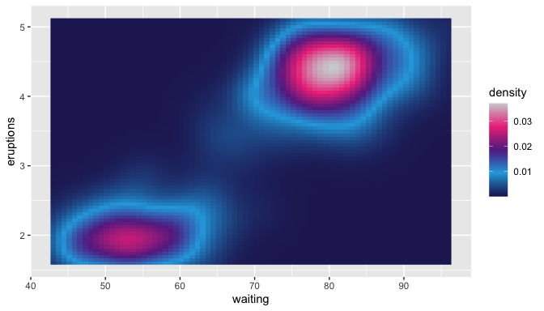
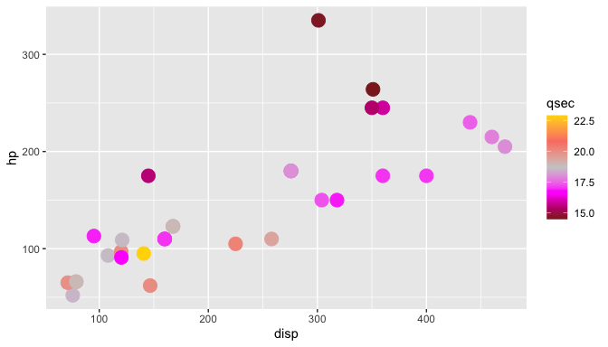
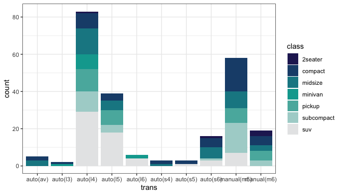
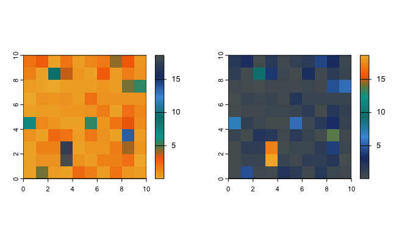

Palettes based on the colour schemes for IDEM, IDDU, ACEFA, and The Kids Research Institute Australia
idpalette does two things
- provides functions for colour palettes based on IDEM, IDDU, ACEFA, and The Kids, and
- provides a
scalefunction that allows the use of these or any color palette withggplot2continuous scales.
Palettes
For a palette of n colours, call: idem(n),iddu(n), acefa(n), or thekids(n)
A wider range of slightly differing palettes available via idpalette, see ?idpal for details.
ggplot2 scale
ggplot2 does not like it when you specify an arbitrary vector of colours to a continuous scale. scale_id_continous allows you to pass any vector of colours, either as an idpalette palette, another palette, or a character vector of whatever god-awful unicorn vomitus suits your whimsy of the moment.
Installation
You can install the development version of idpalette from GitHub with:
# install.packages("devtools")
devtools::install_github("idem-lab/idpalette")Python friend
Python version of idpalette by Rob Moss: https://github.com/robmoss/idpalette
Your colours your way
As many or as few colours as you want, forwards or backwards.
idpalette("iddu", 20)
idpalette("acefa", 2)
idem(10, rev = TRUE)Deal with ggplot2’s objections.
Sometimes ggplot2 won’t play nicely being fed a vector of values for vector of colours to be used in continuous scales.
scale_id_continuous allows idpalette or any arbitrary vector of colours to be converted into a continuous palette:
library(ggplot2)
ggplot(mtcars) +
geom_point(
aes(
x = disp,
y = hp,
colour = qsec
),
size = 5
) +
# usual approach to alter colours:
# scale_fill_continuous(
# palette = iddu()
# ) # but not allowed: Cannot convert `x` to a continuous palette.
# instead we use `scale_id_continuous`:
scale_id_continuous(
cols = iddu(),
aesthetics = "colour"
)
With your own wonderful colour scheme
my_wonderful_colour_scheme <- c("brown4", "magenta", "grey80", "salmon", "gold")
ggplot(mtcars) +
geom_point(
aes(
x = disp,
y = hp,
colour = qsec
),
size = 5
) +
scale_id_continuous(
cols = my_wonderful_colour_scheme,
aesthetics = "colour"
)
Have a go ya mug
library(ggplot2)
ggplot(
faithfuld,
aes(waiting, eruptions)
) +
geom_raster(
aes(fill = density)
) +
scale_fill_gradientn(
colours = idpalette("iddu", 100)
)
ggplot(mpg) +
geom_bar(
aes(
x = trans,
fill = class
)
) +
scale_fill_manual(values = idem()) +
theme_bw()
With terra:
library(sdmtools)
library(terra)
#> terra 1.8.60
r <- example_raster(seed = 20240802)
par(mfcol = c(1, 2))
plot(
r,
col = thekids(100)
)
plot(
r,
col = thekids(100, rev = TRUE)
)